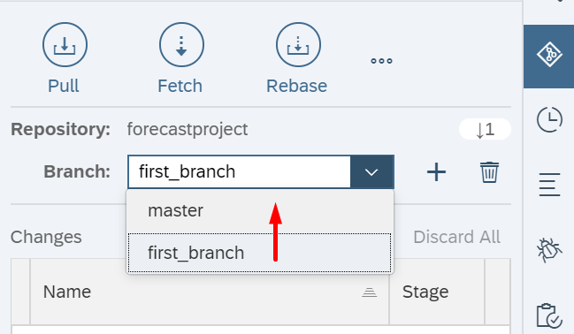
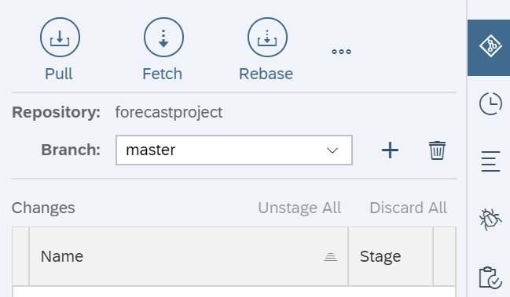

This is a guide to help you out if you're new to using Git with SAP WebIDE
If you're unsure of the meaning of any Git terms, for example pull or push, then take a look at the GitHub glossary.
If you are new to Git make sure you read this guide first - Git - the simple guide by Roger Dudler.
Useful set of blog posts from SCN - SCN Tutorial Group
Please report any issues on github
SAP WebIDE allows you to create a git repository for each project you work on. The creation of the repository is controlled by SAP WebIDE. If you want to work on an application that you did not create yourself from the WebIDE you will need to clone the repository. Once you have made your changes you have to pull the changes from the remote repository first into your local origin/master, merge your changes and fix any issues and then only push your changes to the remote repository if you want other developers to see your changes.
Set Remote
to create a new git repository
Pull and Merge
to perform an initial sync of your local repository with the remote git repositroy.
Push
any changes you've made to the remote git repository
You have a master remote branch that is stored on github.
set remote.Each developer can now leave the master branch as is which means that there are effectively 3 versions of the master branch:
All three versions contain the same code for now. Then each developer decides to make their own changes and so they both create their own unique local branch of the local origin/master version they have on their local machines.The main developer creates a local branch called changeABC_branch and the 2nd developer creates a local branch called changeXYZ_branch. In our scenario we now have the following branches:
The idea with each developer creating a branch for each change is that they can make the change in this branch and then before committing to the remote repository they can pull any changes made by other developers to their local origin/master branch. Then they can try to merge the changes from, for example changeXYZ_branch, locally and test if their changes will work with the other developers recent changes. This helps in scenarios where the main developer has made changes yesterday and you want to merger your changes with his. In this scenario, after you've finished working on your custom branch, you simply change back from the changeXYZ_branch to the origin/master branch.
 
pull / fetch
the changes from the remote origin/master branch to make sure you have the most up to date changes from the remote repository on GitHub.
merge
your origin/master branch with the remote origin/master by clicking on the merge button.
After the merge has completed you can go and check the source code files to see if the code has been updated with changes you don’t recognise (which are most likely changes made and pushed to the remote repository by the another developer).